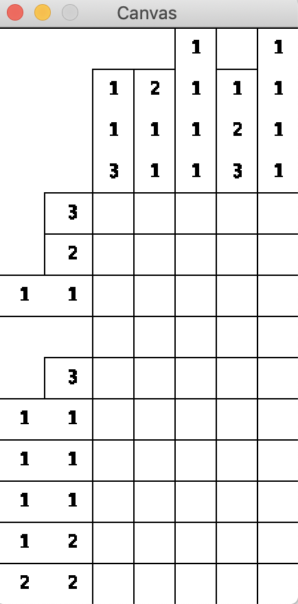
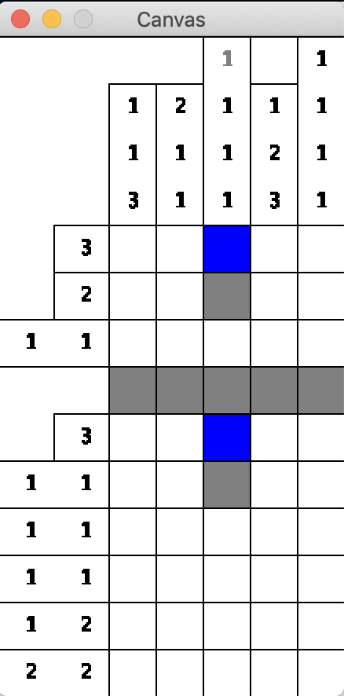
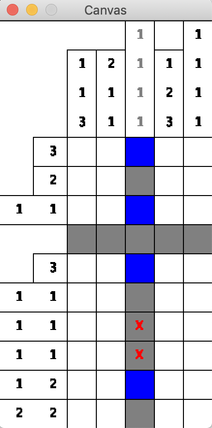
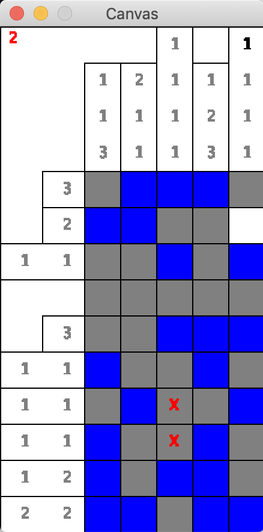

Assignment 19: Nonogram
Goals: Design a game with mutable world state.
You should submit one .java file containing the solution to this problem.
Be sure to properly test your code and write purpose statements for your methods. A lack of tests and documentation will result in a lower grade! Remember that testing requires you to make some examples of data in an examples class.
import tester.*; import javalib.impworld.*; import java.awt.Color; import javalib.worldimages.*;
Read the documentation carefully for more information.
Nonogram
You are going to design a Nonogram puzzle generator and game.
In Nonogram, the player is presented with a grid of tiles that are all initially blank. Every tile is either active or inactive, but it is not revealed which is which. The player must use the clues, given for each row and tile of the grid, to determine which tiles must be active or inactive.
Once the player thinks a tile is active, they can mark it as active. If the player is correct, the tile will be visibly marked as active. If the player is incorrect, the tile will be visibly marked as inactive, and it will be made clear to the player they made a mistake.
The same holds for inactive tiles.
Clues are given in the form of lists of positive integers, which indicate how many unbroken sequences of active tiles there are as well as how many active tiles are in each of those sequences. For example, if a column with 5 tiles has the clue (2, 2), then the player can immediately deduce that the first two tiles must be active, the third must be inactive, and the last two must be inactive.
For another example, if a column with 5 tiles has the clue (3), then the player can deduce that the middle tile must be active, because any unbroken sequence of 3 active tiles must include the middle tile. Determining which of the other tiles are active and inactive will require either guesswork, or, preferably, solving more of the puzzle until the enough of the grid is filled out that it becomes evident.
To get a feel for the game, try it out. To mark a cell as active, click it, and to mark it as inactive, right-click it.
Warning: This game is addictive, and becoming a master Nonogram solver is not the point of this assignment. Only the play the game as much as you need to to get a handle on how it works, and then earn the privilege to play it some more by implementing your own version!
Visuals and Player Interaction
The visuals of the game you will implement are similar to that of the one linked above.
Initially, the player will be presented with a blank grid of tiles and clues for each tile and row.

As the player marks tiles active and inactive (with left and right clicks, respectively), the game will show those tiles as marked.

If the player misclicks a tile, the game will immediately make this obvious.

Note: In my implementation and in these screen shots, clues go from black to grey once they are definitively solved. This is an optional extension which will be discussed below, and you may not work on this (or other) extensions until the core game is finished.
Ending the game
The game ends once the state of every active tile is known (that is, the player has marked every active tile as active or inactive, whether or not the player was correct). Once this happens, the number of mistakes the player made should be shown in the upper-left corner in red.

If the player made no mistakes, you can present a congratulatory message in a friendlier color, but that is an optional improvement. It is fine to just present 0 in red if you want.
Ambiguity
Randomly-generated Nonogram puzzles are guaranteed to have at least one solution, but they are not guaranteed to have a unique solution.
For example, imagine a 2x2 grid where the upper left and bottom right cells are active. The hints for this grid would also be the hints generated by a 2x2 where the bottom left and upper right cells are active.
For your game, you do not have to grapple with this ambiguity, and the player may just get unlucky (ambiguous puzzles are not commonly generated - for example, of the 16 possible 2x2 grids, only 2 are ambiguous).
Testing requirements
As per usual, you should always test your code. However, you do not have to test the methods which produce images, but be sure to test all other aspects of your program.
Other requirements
Your Nonogram game must be able to be launched with just two inputs, the height (number of rows) and width (number of columns). If either of these numbers are not positive, crash the program.
Every time the game launches, a random grid must be generated. Each tile should be assigned active or inactive with a 50/50 chance (Random::nextBoolean will be helpful).
The size of the game in pixels should only be as large as is needed to display the grid and hints (see the example screenshots above), and this means the size of the game can potentially change each time you play it. Hints on how to accomplish this below.
Hints on world state
There are a few crucial things this game needs to keep track of: the state of every tile, which tiles the player has marked and what the player marked it as, and the hints for each row and tile.
For the first two, positions need to be associated with a way to indicate state (or, in the case of the latter, a possibly missing state). Use a data structure which associates one type of data with another.
For the last, you do not want to have to re-compute the hints every time you draw the world. Compute these hints in your constructor and store them as fields in your class.
Design hints
To launch the game and ensure it launches with the correct height and width, add the following methods to your game and call runNonogram from your examples class:
Credit to Kai Tjia for the design of putting a method like runNonogram in the World class itself.
// run the game void runNonogram() { int width = this.totalWidth(); int height = this.totalHeight(); this.bigBang(width, height); } // the total width of the game in pixels int totalWidth() { // TODO return 0; } // the total height of the game in pixels int totalHeight() { // TODO return 0; }
One of the methods you want to be able to test most carefully is the hint-generation, but this becomes difficult if the generated grid is upredictably random for each new game. Therefore, in addition to a constructor which just takes the number of rows and columns, also design a constructor which takes those two numbers as well as an instance of Random, and in your examples class, construct an instance of Random with a consistent random seed to make an instance of your world with a consistent and therefore testable grid.
The IntStream::range method can be very useful for doing something for every row and/or column in your game. Look at the method and the IntStream interface in the Java docs.
Generating hints for rows and columns requires the exact same kind of logic, but looking at rows as opposed to columns or vice versa requires a bit of difference. As such, write an abstract method which processes a list of active/inactive states (however you choose to represent that), and pass off rows/columns to this method as appropriate.
The Posn class that comes with the big-bang library is very limited in its functionality, so I recommend making a MyPosn class which extends the Posn class, as being able to add methods to posns can be very handy.
Drawing hints
When considering the visual elements of the program, consider the vertical hints, the horizontal hints, and the grid itself to be three separate entities. I strongly recomemnd having a different helper method to produce a WorldImage for each of these visual components, and then using the widths and heights of the produced images to compute where each should be placed on the WorldScene.
BesideAlignImage and AboveAlignImage are very helpful for drawing hints for columns and rows, respectively. If you use this method to draw hints, remember that rows and columns without any active states and thus an empty list of hints still needs to take up space for an empty hint (see some of the examples above).
Game extensions
Properly implementing any of the following extensions will give an opportunity for extra credit, but the initial design of your program may not take these extensions explicitly into consideration, as part of the extra credit is for refactoring your program, which is the process of tweaking code to add new features, reorganize it for clarity, and/or squash bugs. Refactoring is a difficulty all programmers experience regularly, and the difficulty of refactoring is always inversely proportional to the level of effort put upfront to make programs well-designed (as in using helpers, delegation, abstraction, and other design principles to the best of your ability).
The extensions are listed in order of increasing difficulty.
Extension one: Extra hints
Sometimes, players may want an extra hint. Pressing "h" on the keyboard should reveal the state of a previously unmarked cell, and like the red "X" in the images above, that cell should be marked with a red "H" (or anothr color of your choice). The cell revealed should be chosen at random from all to-be-revealed cells, unless there is only one unmarked active cell left and at least one unmarked inactive cell, in which case an inactive cell should be marked. The game should end if the last active cell is revealed via hint, and all cells reveald via a hint should be added to the count of mistakes shown to the player at the end.
Extension two: Greying out solved hints
It is helpful to the player if they know which hints they’ve already completed. Once a hint is definitively completed, draw that hint in grey instead of black, per the pictures above. A hint in a row is considered definitively solved if all of the active cells for that hint are marked and every cell to the left of it is marked, as well as the cell immediately to the right (if it exists), or vice versa. The same is true for column hints and cells below/above it.
Extension three: Dragging
It can be tedious to have to click every cell, and in the version of the game, linked above, players can drag after clicking or right-clicking to mark a streak of cells in a single row/column. It is clear to the player which cells will be marked when they let go out of the mouse, and cells which have previously been marked are unaffected by this action. Test out this feature in the linked version of the game, and then implement it for your version.
Extension four: Ambiguous puzzles
If a player enters a valid solution for an ambiguous puzzle that doesn’t happen to match the generated state, that can be a frustrating experience. Make your game flexible so that it considers inputs from the player correct so long as it fits any solution with the given hints and the state of the board revealed so far. The game should end once the active cells of any valid solution are totally marked, and note what solutions are potentially valid may change as the player marks certain cells as active or inactive. Beware this extensions is extremely difficult and should only be attempted if you have an abundance of free time, such as during spring break or over summer vacation.